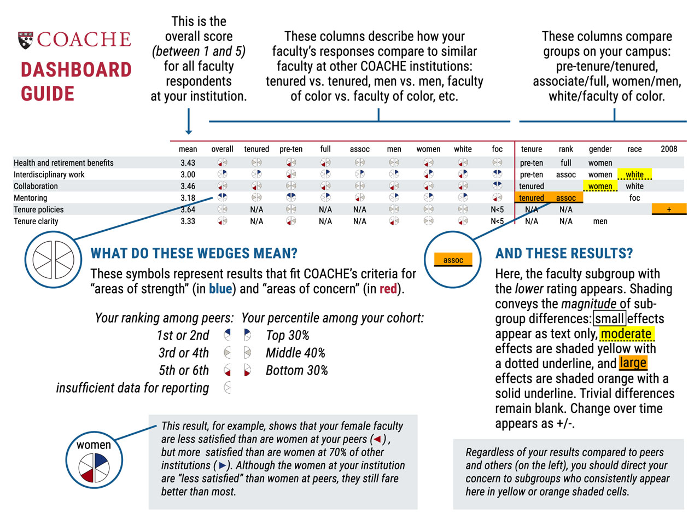

Visit coache.gse.harvard.edu for more partner resources.
© Copyright 2023, The President & Fellows of Harvard College
These displays offer a closer view of your faculty. Each benchmark represents the average of several survey items that share a common theme. Thus, the benchmark scores provide a general sense of how faculty feel about a particular aspect of their work/life.
For each result, your report uses two adjacent semicircles (◖ ◗) to compare your faculty's rating to those of your selected comparison institutions (the left ◖) and the cohort (the right ◗). Red semicircles (◖ ◗) indicate an area of concern relative to the comparison group; blue semicircles (◖ ◗) are areas of strength; grey semicircles (◖ ◗) suggest unexceptional performance; and empty semicircles (◖ ◗) signify insufficient data for reporting comparisons, either at your institution or at your peers.
With this iconography, your dashboard page shows your results relative to your selected comparison institutions and the cohort overall, by tenure status, rank, gender, race/ethnicity, and academic area. For example, a finding for women might read ◖◗ meaning that, compared to women elsewhere, your women faculty's ratings placed your campus in the top two among your selected comparison institutions and in the bottom 30 percent among all COACHE institutions. Thus, although you are generally doing well against your selected comparators, you and your comparators have room for improvement in women's attitudes along this dimension.
On the right side of the page are your intra-institutional comparisons, which highlight the meaningful differences between subgroups on your own campus. Here, effect sizes are indicated as small (text appears in cell), moderate (text appears in cell with yellow highlight), and large (text appears in the cell with orange highlight). Trivial differences remain blank. The name of the group with the lower rating appears in the cell to indicate the direction of the difference. Ideally, this section of your report would be blank, suggesting parity across subgroups. (We did not design a typical red/yellow/blue signal here because a large difference is not necessarily a poor outcome, but depends, instead, on the context of the result.)
Even if your campus performs well compared to other institutions, large differences between subgroups can suggest a problem. For example, it is quite possible for a campus to perform very well overall on a particular benchmark (or individual item) while still having great disparity based on rank, race, or gender. This is especially true when the number of faculty in a particular subgroup is small. The underrepresented group may be less satisfied, but because their numbers are so few, their concerns may get lost in the overall result. The COACHE report is designed to identify such gaps.
